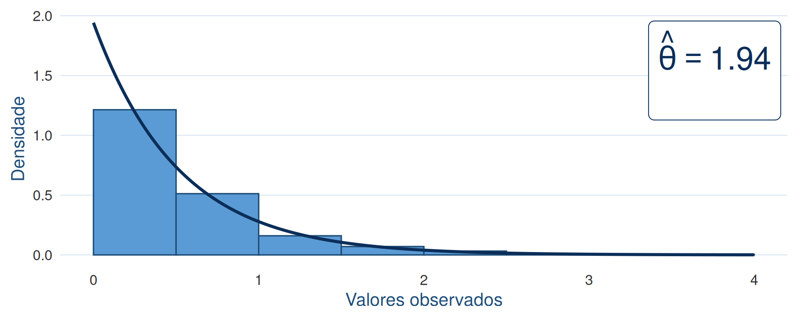
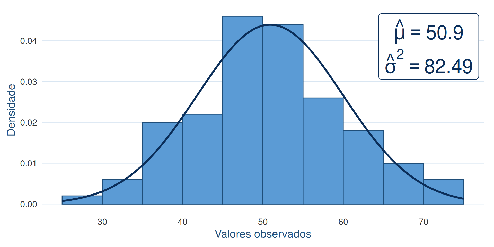

O Método dos Momentos
Como construir um estimador?
ESTAT0078 – Inferência I
Prof. Dr. Sadraque E. F. Lucena
http://sadraquelucena.github.io/inferencia1
Estimação de Parâmetros
Considere duas situações:
- Um atuário precisa modelar o valor dos sinistros de uma seguradora e decide ajustar uma distribuição Gama ou Pareto.
- Um estatístico precisa modelar o número de pacientes que chegam ao pronto-socorro por hora por meio de uma distribuição Poisson.
Em ambos os problemas, conhecemos o modelo probabilístico, mas desconhecemos seus parâmetros.
Como podemos usar os dados observados para estimar esses parâmetros?
- Para isso podemos usar o Método dos Momentos.
A Ideia do Método dos Momentos
- Como a população é desconhecida, obtemos uma amostra.
- A ideia do Método dos Momentos é substituir os momentos populacionais desconhecidos pelos correspondentes momentos amostrais observados.
- Se a média da população é \(\mu(\theta)\) (uma equação que envolve \(\theta\)) e a média da amostra é \(\overline{X}\), forçamos a igualdade: \[ \mu(\theta) = \overline{X} \] e resolvemos a equação para encontrar \(\theta\).
Definição 2.1: Momentos Populacionais
Os momentos populacionais descrevem a “forma” teórica da distribuição. Eles são constantes que dependem dos parâmetros desconhecidos.
Seja \(X\) uma variável aletória com densidade \(f(x|\theta)\). O \(k\)-ésimo momento populacional (ao redor da origem) é:
\[ \mu'_k(\theta) = E[X^k] = \begin{cases} \int_{-\infty}^{\infty} x^k f(x|\theta) dx & \text{(Contínuo)} \\ \sum_{x} x^k P(X=x|\theta) & \text{(Discreto)} \end{cases} \]
- Casos Clássicos:
- \(k=1 \implies \mu'_1 = E[X]\) (Média)
- \(k=2 \implies \mu'_2 = E[X^2]\) (Segundo momento, usado para variância)
Definição 2.2: Momentos Amostrais
Os momentos amostrais são variáveis aleatórias calculadas a partir dos dados observados \(X_1, \dots, X_n\). Eles não dependem de \(\theta\).
O \(k\)-ésimo momento amostral é: \[M'_k = \frac{1}{n} \sum_{i=1}^n X_i^k\]
- Note que o primeiro momento amostral é \(M'_1=\overline{X}.\)
- Pela Lei dos Grandes Números, sabemos que quando \(n \to \infty\): \[M'_k \xrightarrow{P} E(X^k).\]
O Método dos Momentos
Considere um modelo com \(k\) parâmetros desconhecidos \(\theta_1, \dots, \theta_k\).
Passo 1: Calcule os \(k\) primeiros momentos teóricos: \[E[X], E[X^2], \dots, E[X^k]\]
Passo 2: Calcule os \(k\) primeiros momentos amostrais: \[M'_1 = \overline{X}, \quad M'_2 = \frac{1}{n}\sum X_i^2, \dots, M'_k = \frac{1}{n} \sum X_i^k\]
O Método dos Momentos
Passo 3: Monte o sistema de equações igualando População = Amostra: \[\begin{cases} E[X] = M'_1 \\ E[X^2] = M'_2 \\ \vdots \\ E[X^k] = M'_k \end{cases}\]
Passo 4: Resolva o sistema para \(\theta_1, \dots, \theta_k\). As soluções são os estimadores \(\widehat{\theta}_1, \dots, \widehat{\theta}_k\).
Exemplo 2.1
Considere uma amostra aleatória \(X_1,\ldots,X_n\) de uma população tal que
\[ X_i \sim \operatorname{Bernoulli}(p), \qquad i=1,\ldots,n, \]
em que \(p\) é desconhecido.
a) Utilizando o Método dos Momentos, obtenha um estimador para \(p\).
b) Se, em uma amostra de \(n=20\) indivíduos, foram observados 14 sucessos, qual é a estimativa de \(p\) pelo método dos momentos?
Se \(X\sim \operatorname{Bernoulli}(p)\):
- \(P(X=x\mid p)=p^x(1-p)^{1-x}\), \(x\in\{0,1\}\)
- \(E(X) = p\)
- \(Var(X) = p(1-p)\)
Exemplo 2.2
Considere uma amostra aleatória \(X_1,\ldots,X_n\) de uma população com distribuição Exponencial tal que \[ f(x\mid \theta) = \frac{1}{\theta} e^{-\frac{x}{\theta}}, \quad x>0, \theta>0. \]
a) Obtenha um estimador para \(\theta\) pelo Método dos Momentos.
b) Se, em uma amostra de \(n=100\) observações, foi obtida uma média amostral de \(\overline{X}=0{,}5155\), qual é a estimativa de \(\theta\)?
Se a densidade da Exponencial é escrita dessa forma:
- \(E(X) = \theta\)
- \(Var(X) = \theta^2\)
Exemplo 2.3
Considere uma amostra aleatória \(X_1,\ldots,X_n\) de uma população tal que
\[ X_i \sim N(\mu,\sigma^2), \qquad i=1,\ldots,n, \]
em que \(\mu\) e \(\sigma^2\) são desconhecidos. Utilizando o Método dos Momentos, obtenha os estimadores de \(\mu\) e \(\sigma^2\).
- Se \(X\sim N(\mu,\sigma^2):\) \[ f(x\mid \mu,\sigma^2) = \frac{1}{\sqrt{2\pi\sigma^2}}e^{-\frac{(x-\mu)^2}{2\sigma^2}}, \] para \(-\infty<x<\infty\).

Quando o 1º Momento Falha
- Se um momento falhar, podemos tentar usar outro.
Exemplo 2.4
Considere \(X \sim \text{Uniforme}(-\theta, \theta)\). Obtenha o estimador pelo método dos momentos.
Temos apenas um parâmetro (\(\theta\)). O primeiro momento é \[E[X] = \frac{-\theta + \theta}{2} = 0\]
Igualar \(0 = \overline{X}\) não nos ajuda a encontrar \(\theta\).
Solução: Vamos usar o próximo momento, \(E[X^2]\).
Exemplo 11.4
O valor dos sinistros de uma carteira de seguros segue uma distribuição de Pareto com parâmetro de forma \(\alpha > 1\) e parâmetro de escala (sinistro mínimo) conhecido \(x_m = 1000\). A densidade é \(f(x) = \frac{\alpha x_m^\alpha}{x^{\alpha+1}}\) para \(x \ge x_m\). Estime \(\alpha\) pelo método dos momentos.
Dica
Se \(X\sim\) Pareto(\(\alpha, x_m\)), então \(E(X) = \alpha x_m/(\alpha - 1)\).
Propriedades Importantes
- Consistência: À medida que a amostra aumenta (\(n\to\infty\)), a probabilidade do estimador obtido pelo método dos momentos se afastar do verdadeiro parâmetro vai a zero.
- Pela Lei dos Grandes Números, os momentos amostrais convergem para os populacionais, \(\widehat{\theta} \stackrel{P}{\to} \theta\).
- Viés: Frequentemente os estimadores obtidos pelo método dos momentos são viesados.
- Frequentemente \(E(\widehat{\theta}_{\!M\!M})\neq \theta\).
- Eficiência: Geralmente os estimadores obtidos pelo método dos momentos têm variância maior que os estimadores de Máxima Verossimilhança. Ou seja, em geral não são eficientes.
Propriedades Importantes
- Suficiência: O Método dos Momentos nem sempre gera estimadores suficientes.
- Isto é: O estimador pode “desperdiçar” informação. Nesses casos, ele não resume tudo o que a amostra tem a dizer sobre o parâmetro; houve perda de informação no processo.
- Custo Computacional: Por produzir equações geralmente simples, o custo computacional do método é baixo.
- É um ótimo valor inicial para algoritmos numéricos.
- Existencia: Se os momentos não existirem, não é possível obter um estimador por esse método.
Fim